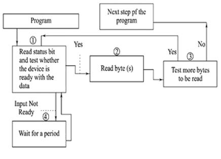
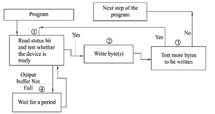
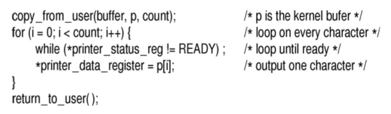
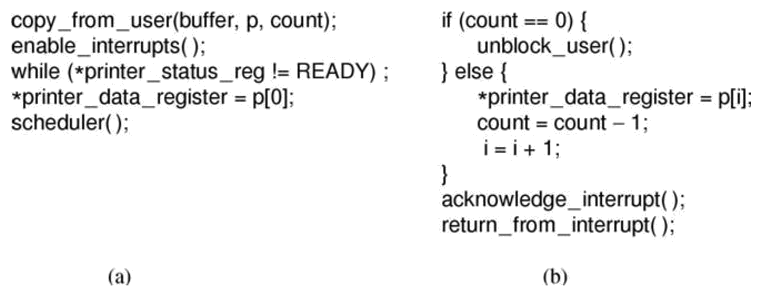
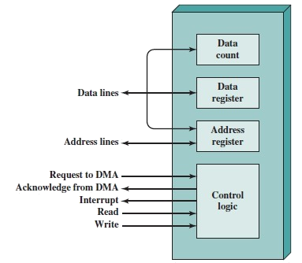

A key concept in the design of I/O software
is known as device independence.
It means that I/O devices should be accessible to
programs without specifying the device in advance.
Uniform Naming, simply be a string or
an integer and not depend on the device in any way.
In UNIX, all disks can be integrated in the file-system
hierarchy in arbitrary ways so the user need not be
aware of which name corresponds to which device.
Error Handling: If the controller discovers
a read error, it should try to correct the
error itself if it can.
If it cannot, then the device driver should handle it,
perhaps by just trying to read the block again.
In many cases, error recovery can be done
transparently at a low level without the upper levels
even knowing about the error.
Synchronous (blocking) and Asynchronous
(interrupt-driven) transfers: Most physical
I/O is asynchronous, however, some very
high-performance applications need to control
all the details of the I/O, so some operating
systems make asynchronous I/O available to them.
Buffering: Often data that come off a device
cannot be stored directly in their final destination.
Sharable and Dedicated devices: Some I/O devices,
such as disks, can be used by many users at the same time.
No problems are caused by multiple users having open
files on the same disk at the same time.
Other devices, such as printers, have to be
dedicated to a single user until that user is finished.
Then another user can have the printer.
Introducing dedicated (unshared) devices also
introduces a variety of problems, such as deadlocks.
Again, the operating system must be able to handle
both shared and dedicated devices in a way that avoids problems.
Programmed I/O
This is one of the three fundamentally different ways
that I/O can be performed.
The programmed I/O was the most simple type of
I/O technique for the exchanges of data or any
types of communication between the processor and the external devices.
With programmed I/O, data are exchanged between
the processor and the I/O module.
The processor executes a program that gives it direct
control of the I/O operation, including sensing device status,
sending a read or write command, and transferring the data.
When the processor issues a command to the I/O module,
it must wait until the I/O operation is complete.
If the processor is faster than the I/O module,
this is wasteful of processor time.
The overall operation of the programmed I/O can be summaries as follow:
The processor is executing a program and encounters
an instruction relating to I/O operation.
The processor then executes that instruction by issuing
a command to the appropriate I/O module.
The I/O module will perform the requested action
based on the I/O command issued by the processor
(READ/WRITE) and set the appropriate bits in the
I/O status register.
The processor will periodically check the status of the
I/O module until it find that the operation is complete.
Programmed I/O Mode: Input Data Transfer
Each input is read after first testing whether the
device is ready with the input (a state reflected
by a bit in a status register).
The program waits for the ready status by repeatedly
testing the status bit and till all targeted bytes
are read from the input device.
The program is in busy (non-waiting) state only
after the device gets ready else in wait state.

Programmed I/O Mode: Output Data Transfer
Each output written after first testing whether
the device is ready to accept the byte at its
output register or output buffer is empty.
The program waits for the ready status by repeatedly
testing the status bit(s) and till all the
targeted bytes are written to the device.
The program in busy (non-waiting) state only
after the device gets ready else wait state.

Programmed I/O Commands
To execute an I/O-related instruction, the
processor issues an address, specifying the particular
I/O module and external device, and an I/O command.
There are four types of I/O commands that an
I/O module may receive when it is addressed by a processor:
Control
Test
Read
Write

Advantages of Programmed I/O
Simple to implement
Very little hardware support
Disadvantages of Programmed I/O
Busy waiting
Ties up CPU for long period with no useful work
Interrupt-Driven I/O
Interrupt driven I/O is an alternative scheme dealing with I/O.
Interrupt I/O is a way of controlling input/output
activity whereby a peripheral or terminal that needs to
make or receive a data transfer sends a signal.
This will cause a program interrupt to be set.
At a time appropriate to the priority level of the I/O interrupt.
Relative to the total interrupt system, the processors enter an interrupt service routine.
Interrupt I/O Inputs
For input, the device interrupts the CPU when
new data has arrived and is ready to be retrieved
by the system processor.
The actual actions to perform depend on whether
the device uses I/O ports or memory mapping.
Interrupt I/O Outputs
For output, the device delivers an interrupt either
when it is ready to accept new data or to acknowledge
a successful data transfer.
Memory-mapped and DMA-capable devices usually generate
interrupts to tell the system they are done with the buffer.
Operations in Interrupt I/O
CPU issues read command.
I/O module gets data from peripheral whilst CPU does other work.
I/O module interrupts CPU.
CPU requests data.
I/O module transfers data.

Advantages of Interrupt-Driven I/O
Its faster than Programmed I/O.
Efficient too.
Disadvantages of Interrupt-Driven I/O
It can be tricky to write if using a low level language.
It can be tough to get various pieces to work well together.
I/O Using DMA
Direct Memory Access is a technique for transferring data
within main memory and external device without
passing it through the CPU.
DMA is a way to improve processor activity
and I/O transfer rate by taking-over the job of
transferring data from processor, and letting the
processor to do other tasks.
This technique overcomes the drawbacks of other two
I/O techniques which are the time consuming process
when issuing a command for data transfer and tie-up
the processor in data transfer while the data processing is neglected.
It is more efficient to use DMA method when large
volume of data has to be transferred.
For DMA to be implemented, processor has to
share its' system bus with the DMA module.
Therefore, the DMA module must use the bus only
when the processor does not need it, or it must
force the processor to suspend operation temporarily.
Operations of Direct Memory Access
Read or Write Command
Control Lines Communication
Data Lines Communication

Advantages of DMA
Speed: no waiting due to much shorter
execution path and no rotation delay.
Quiz
Buffering is
only important for input devices
only important for output devices
important for input and output devices
only important for disk drives
I/O errors should be handled
at the highest level possible
at the lowest level possible
by a device driver
by the user-level programs
An advantage of a UNIX-type file system is that
it consists of highly structured records
files can be quickly searched due to their tree structure
the OS knows the distinct type of each file
all disks can be mounted in a single tree and made available by filename
In order to avoid continual process switching to handle I/O OSes will employ